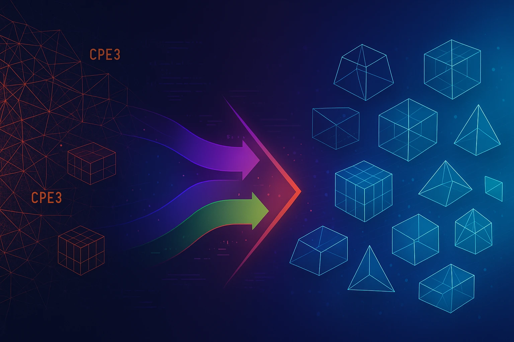

AbaqusReader.jl

Parse ABAQUS input files in Julia with a clean, modern API.
AbaqusReader.jl provides two distinct approaches for working with ABAQUS .inp files:
- Mesh-only parsing for quick geometry extraction
- Complete model parsing for full simulation definitions
Design Philosophy: We provide topology (geometry and connectivity), not physics (formulations and behavior). Read our Philosophy to understand why we reject ABAQUS's element proliferation and embrace clean, topological types instead.
Drag & drop your ABAQUS .inp files • Visualize meshes in 3D • No installation required
Two Approaches for Two Different Needs
1. Mesh-Only Parsing - abaqus_read_mesh()
Fast and lightweight - extracts only the geometry and topology (nodes, elements, sets).
Returns a simple Dict structure perfect for:
- 🎨 Visualizing geometry
- 🔄 Converting meshes to other formats
- 🔍 Quick mesh inspection
- 🛠️ Building custom FEM implementations
Use when: You need the mesh structure but not the physics.
2. Complete Model Parsing - abaqus_read_model()
Full simulation recipe - parses everything needed to reproduce the analysis.
Returns a structured Model object containing:
- 📐 Mesh (nodes, elements, sets, surfaces)
- 🧱 Materials and properties
- 📍 Boundary conditions and loads
- 📊 Analysis steps and outputs
Use when: You need to understand or reproduce the complete simulation setup.
Important Notes
File Format: Both functions work best with "flat" ABAQUS input files. Structured formats (parts, assemblies) may have limited support.
Keyword Coverage:
abaqus_read_model()handles common ABAQUS keywords but doesn't cover every possible option. It's designed for typical simulation extraction use cases.Element Types: We use clean topological types (
Tri3,Quad4,Tet4,Hex8) instead of ABAQUS's physics-specific nomenclature. Original names are preserved in metadata for traceability.